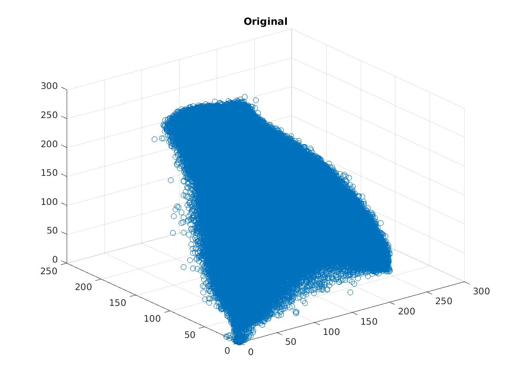

Contents
MyMainScript
sample for my own colormap
myNumOfColors = 256; colorScale = 0:1/(myNumOfColors-1):1; myColorScale = [ colorScale' colorScale' colorScale' ]; % This contains the code that imports the image, % generates the plots, and segments it tic;
Your code here
image = double(imread('../data/baboonColor.png')); [img, features, segmented_img] = myMeanShiftSegmentation(image, 2, 1, 1500, 250, 250, 15, 0.1); figure; subplot(1,2,1); imagesc(image/255); daspect([1 1 1]); axis tight; colormap(myColorScale); title('Original'); subplot(1,2,2); imagesc(segmented_img); daspect([1 1 1]); axis tight; colormap(myColorScale); title('Segmented'); toc;
function myMeanShiftSegmentation
function [ img, features, segmented_img ] = myMeanShiftSegmentation( image, sampling_rate, sigma_smooth, ... nbr_no, h_color, h_space, num_iter, learning_rate ) % Inferences
% Since the kernel is a product of two kernels, there will be a factor of (h_1/h_2)^2 in the value of log(gradient(f(x))), % we have ignored that for simplicity and let the learning_rate take care of it % init variables [m n p] = size(image); K = round(3*sigma_smooth); max_intensity = 255; % sample and smooth image img = image(1:sampling_rate:m, 1:sampling_rate:n, :); smooth_filt = fspecial('gaussian', [2*K+1, 2*K+1], sigma_smooth); img = imfilter(img, smooth_filt); % take all normalized features features = img; [m n p] = size(img); features(:,:,p+1) = meshgrid(1:m, 1:n)'; features(:,:,p+2) = meshgrid(1:n, 1:m); features = reshape(features, m*n, p+2); % features are in 2D [num_pixels, num_features] now, do some gradient % ascent function gradient = myGradient(x, index) nbrs = features(index, :); m_nbrs = nbrs - meshgrid(x, 1:nbr_no); wts1 = exp(-sum((m_nbrs(:, 1:p)/h_color).^2, 2)); wts2 = exp(-sum((m_nbrs(:, p+1:p+2)/h_space).^2, 2)); wts = wts1.*wts2; % wts is a nbr*1 vector gradient = sum(repmat(wts, 1, p+2).*nbrs)/sum(wts) - x; end % for every iteration, find neighbours, compute gradients and update % values for iter = 1:num_iter fprintf('Iteration number %d\n', iter); % compute nearest neighbours idx = knnsearch(features, features, 'k', nbr_no); gradients = zeros(size(features)); for i=1:m*n, gradients(i, :) = myGradient(features(i,:), idx(i,:)); end features = features + learning_rate*gradients; end segmented_img = reshape(features(:,1:p), m, n, p)/255; end
Iteration number 1 Iteration number 2 Iteration number 3 Iteration number 4 Iteration number 5 Iteration number 6 Iteration number 7 Iteration number 8 Iteration number 9 Iteration number 10 Iteration number 11 Iteration number 12 Iteration number 13 Iteration number 14 Iteration number 15 Elapsed time is 655.698364 seconds.
Image comparison

3d Scatter Plot comparison
The below scatter plots show that the image has decomposed into segments
